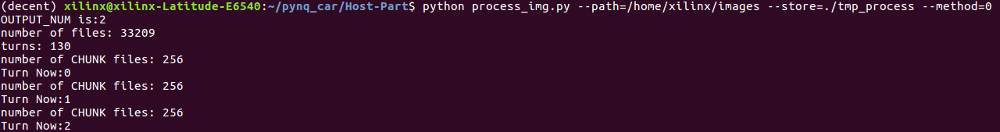
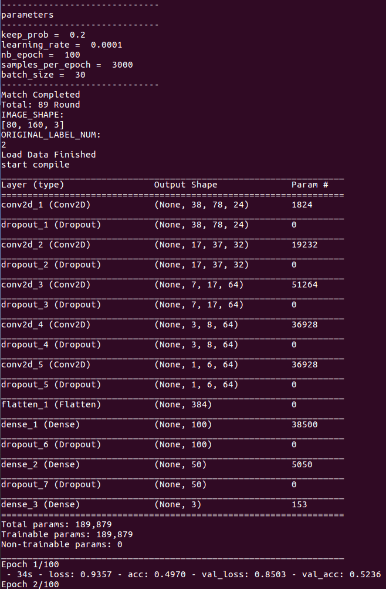

What you will learn
- Image preprocess.
- Train the AI model using keras.
Handle images
Why we need preprocess?
- The initial images may not meet the requirements of the model input, for example, the image size is 1020*720 while the input size is 160*120.
- The model's performance highly depends on the input quality and there exists many ways to make the images more suitable for training such as normalization.
Steps
- First copy the images your generated(using the images from the car's collect function or from the simulator or from anywhere) to the
/home/xilinx/HydraMini/Host-Part/images directory.
- Run
python process_img.py --path=./images --store=./training_data_npz --method=1 --cut_head_size=40, process_img reads images from path and store the result in store. path refers to the initial image directory, store refers to the directory to store result, method provides a way to ignore some images(usually we set method=1 to do nothing), cut_head_size means how many pixels to cut, for example, if cut_head_size=40, the inital image size is 160*120, then the result image size is 160*80, cut_head_size is used to delete some useless information.

Train the model
Steps
- Run
python train.py --model=./model --read=./training_data_npz --output_num=2, it will use the processed images from process_img's result and store the trained model in model directory. You can also set the output number of the model by --output_num=(for ex.1 for steer only and 2 for steer&speed).
Tip:The input size of the model is defined by the result of process_img, The output size of the model is defined by --output_num

Summary
- The above process can be run in one command: Run
./process_train.sh, it will use default parameters.
- Now, you have trained an AI model which inputs images and output control values. Next, if you want to run and accelerate the model in pynq, you will use DNNDK provided by xilinx to compile the .h5 model to .elf file.